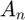
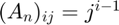

Exercice 8, Matrice de Vandermonde
Pour cet exercice, on doit construire une matrice  telle que .
A5 = vandermonde_matrix(5)
Pour une raison étrange la matrice apparait en dessous du bloc de code de la fonction, alors que sa création est la première ligne de code du script
-- Fonctions --
function An = vandermonde_matrix(size) An = zeros(size); for i = 1:size for j = 1:size An(i,j) = j.^(i-1); end end end
A5 =
1 1 1 1 1
1 2 3 4 5
1 4 9 16 25
1 8 27 64 125
1 16 81 256 625